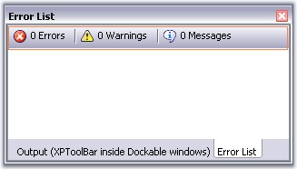

An XP Toolbar is a toolbar-like control with look-and-feel of the XP Menus toolbar. It supports a list of BarItems which can be added to it. It is a stand-alone control that can also be used in the absence of a BarManager also.

Figure 805: XPToolbar with Bar Items in a Floating Window
See Also
 Adding and Filling the XPToolbar
Adding and Filling the XPToolbar